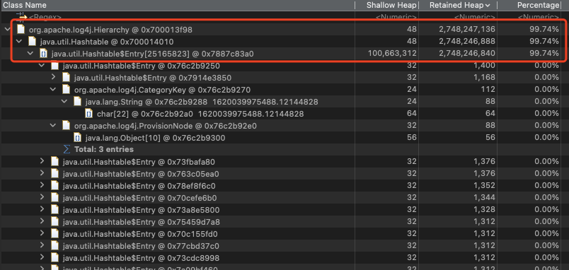

azkaban定期出现fullgc
azkaban 3.80.1
现象
azkaban集群中的节点每隔几个月会出现一次fullgc
排查
1 jmap - histo
发现有大量的log4j对象和Hashtable对象，以下为大于1M的对象
num #instances #bytes Class description
--------------------------------------------------------------------------
1: 10681368 765816608 char[]
2: 10646214 466505328 java.lang.Object[]
3: 10642650 340564800 java.util.Hashtable$Entry
4: 10678719 256289256 java.lang.String
5: 10640889 255381336 org.apache.log4j.CategoryKey
6: 6588073 210818336 org.apache.log4j.ProvisionNode
7: 4052816 162112640 org.apache.log4j.Logger
8: 4052848 129691136 java.util.Vector
9: 91 100682832 java.util.Hashtable$Entry[]
10: 4052738 64843808 org.apache.log4j.helpers.AppenderAttachableImpl
11: 3675 1633592 int[]
12: 3733 1364304 byte[]
2 MAT分析dump文件
发现org.apache.log4j.Hierarchy对象占了2.7G，占比99.74%，Hierarchy对象中有一个Hashtable对象，Hashtable对象中有一个Hashtable$Entry数组，数组中有25165823个Entry 
3 分析log4j代码
org.apache.log4j.Hierarchy
public class Hierarchy implements LoggerRepository, RendererSupport, ThrowableRendererSupport {
private LoggerFactory defaultFactory;
private Vector listeners = new Vector(1);
Hashtable ht = new Hashtable();
...
public Logger getLogger(String name, LoggerFactory factory) {
CategoryKey key = new CategoryKey(name);
synchronized(this.ht) {
Object o = this.ht.get(key);
Logger logger;
if (o == null) {
logger = factory.makeNewLoggerInstance(name);
logger.setHierarchy(this);
this.ht.put(key, logger);
this.updateParents(logger);
return logger;
} else if (o instanceof Logger) {
return (Logger)o;
} else if (o instanceof ProvisionNode) {
logger = factory.makeNewLoggerInstance(name);
logger.setHierarchy(this);
this.ht.put(key, logger);
this.updateChildren((ProvisionNode)o, logger);
this.updateParents(logger);
return logger;
} else {
return null;
}
}
}
代码解析
- Hierarchy对象中有一个Hashtable类型的变量ht，用来保存logger，每当调用getLogger的时候，首先尝试从ht中根据name获取logger，找不到会创建一个新的logger，并且放到ht
4 分析azkaban代码
azkaban.execapp.JobRunner
private void createLogger() {
// Create logger
synchronized (logCreatorLock) {
final String loggerName =
System.currentTimeMillis() + "." + this.executionId + "."
+ this.jobId;
this.logger = Logger.getLogger(loggerName);
try {
attachFileAppender(createFileAppender());
} catch (final IOException e) {
removeAppender(this.jobAppender);
this.flowLogger.error("Could not open log file in " + this.workingDir
+ " for job " + this.jobId, e);
}
...
private void closeLogger() {
if (this.jobAppender != null) {
removeAppender(this.jobAppender);
}
if (this.kafkaAppender.isPresent()) {
removeAppender(this.kafkaAppender);
}
}
代码解析
- azkaban中JobRunner有一个createLogger方法，这里的loggerName组成为：当前时间戳+executionId+jobId，并且在closeLogger并没有从log4j中释放logger
- 以上代码会导致一个问题，每次createLogger的loggerName都不相同，这样随着服务器运行，logger数量会不断增加，即Hierarchy中的ht不断膨胀，直到把内存占满，这是一个典型的内存泄漏问题